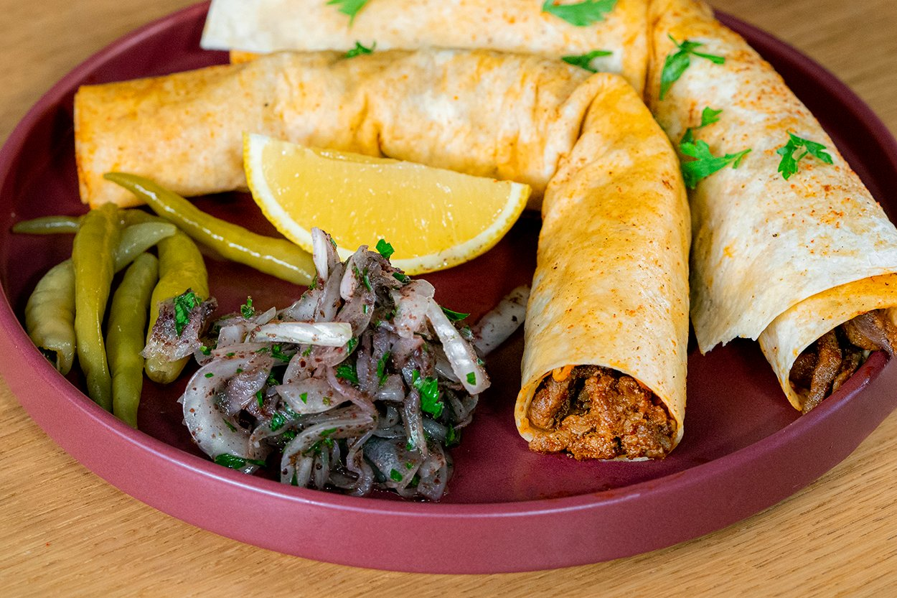

-MERSİN TANTUNİSİ-
-Tantuni Tarifi İçin Malzemeler-
4 adet tandır lavaşı
400 gram dana kontrfile(ince doğranmış)
1/2 çay bardağı pamuk yağı
1/4çay kaşığı tuz
1 yemek kaşığıtoz kırmızı biber
1/2çay bardağısu
1/4d emet maydanoz (isteğe göre)
2 adet domates (isteğe göre)
1 adet soğan (isteğe göre)
-Tantuninin püf noktaları-
Pişirme sırasında saca arada bir eklenen su ya da et suyunun amacı, sacın sıcaklığını kontrol etmek ve tantuninin sarılacağı ekmeği yumuşatmak için buhar sağlamaktır. Önceden dinlendirilmiş et kullanmayı tercih edebilir, et suyu yerine aralarda çok az miktarda su ekleyerek de ocağı ateşleyebilirsiniz. Önceden ısıtılmış wok tava yerine tantuni yapımında sac tava kullanmayı tercih edebilirsiniz.
